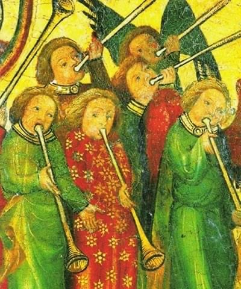

Een Middeleeuwse Kerst:
Middeleeuwse Kerstliederen uit de Nederlanden
Doelgroep:
Liefhebbers van ieder niveau
Datum:
U kunt deze workshop in overleg boeken voor de adventsperiode tot een paar dagen na Kerstmis, met uitzondering van beide Kerstdagen, met een minimum van 2 deelnemers.
Kosten:
117 Euro per persoon
Omschrijving:
Het feest van de geboorte van Christus is in de Christelijke traditie een van de belangrijkste feesten, in de middeleeuwen zelfs het allerbelangrijkste. De muziek die voor het Kerstfeest werd geschreven was daarom in vergelijking met ander repertoire ook vaker meerstemmig, had vaker mooie versieringen (melismen, ’trillers’, etc.) en werd volgens de overlevering vaker begeleid door instrumenten. Het repertoire voor deze workshop is gekozen uit middeleeuwse handschriften uit de Nederlanden, die het Kerstverhaal rijk illustreren.
Een belangrijk deel van het gekozen repertoire staat in het boek ‘Liederen van Licht en Troost’ (M. Kalse en M. Mudde, 2013) waarin een bloemlezing van liederen uit de zogenaamde Moderne Devotie in handschrift is weergegeven, met transcriptie van de teksten en vertalingen. Dit boek wordt tijdens de workshop gebruikt.
Bespelers van middeleeuwse en renaissance instrumenten zijn ook van harte welkom ter verhoging van de feestvreugde, maar het accent ligt op het zingen.